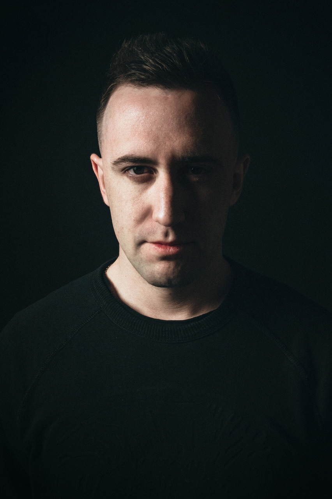

Что он имел в виду? Почему он поступает именно так? Как понять, что он чувствует, если не получается вытянуть из него ни слова? У нас всё серьезно или срок годности этих отношений быстро закончится?
👆🏼Если ты каждый раз задаешься этими вопросами и не находишь ответы👆🏼
Если ты устала от того, что реальные отношения всегда далеки от твоих ожиданий
Если ты хочешь разобраться в психологии мужчин, чтобы построить взрослые, осознанные и счастливые отношения
Я — практикующий психолог и Гештальт-терапевт Данил Луценко, научу тебя понимать мужчин — их мысли, намерения, причины поведения, чувства к тебе.
Моё обучение точно поможет, если хотя бы один пункт тебе знаком:
lutsenko-online.ru
💔Тебе кажется, что твой мужчина не слышит тебя. Он не открывается тебе, не ценит твоё мнение, не уважает твои чувства.
💔Ты часто попадала в странные отношения, в которых тебя обижали.
💔Мужчина не проявляет свою любовь. Он не дарит подарки, не хочет тратить деньги на тебя, не знакомит с друзьями и родителями.
💔Ты уже давно одна и не понимаешь, как начать строить здоровые отношения.
💔У тебя проблема — ты постоянно выбираешь не тех. Мужчина расслабляется в отношениях, не хочет ничего делать, условно — «лежит на диване и пьёт пиво».
💔В твоих отношениях главный мужик — это ты.
Как решить эти проблемы, я рассказываю на курсе.
Курс по ценности — примерно 20 консультаций с психологом.
Курс по цене — меньше двух консультаций с психологом.
lutsenko-online.ru
Комплексы современного человека
Абстракции
ПСИХОЛОГИЮ МУЖЧИН НУЖНО ИЗУЧАТЬ, ЕСЛИ:
💔Ты замечаешь, что в отношениях с тобой мужчины деградируют, вспоминают свои дурные привычки, становятся ленивыми и не проявляют инициативу.
💔У тебя есть много убеждений и стереотипов по поводу мужчин. Из-за негативного опыта ты боишься вступать в отношения и думаешь, что «все они козлы».
💔В детстве у тебя не было примера счастливых отношений перед глазами — либо отец ушёл из семьи, либо родители постоянно ругались.
💔Ты очень ревнивая, боишься потерять мужчину, в отношениях впадаешь в зависимость, не можешь без него и дня.
💔Постоянно встречаешь одних мудаков и манипуляторов на своём пути.
ТЕБЕ НУЖНО ПРОЙТИ КУРС, ЕСЛИ ХОТЯ БЫ ОДИН ПУНКТ ПРО ТЕБЯ:
💔Он не дарит подарки и цветы. Ты хочешь романтики, но её никогда нет. Кажется, что он просто не способен на поступки.
💔Он не слышит тебя, не уважает твоё мнение, не знакомит с близкими.
💔Тебе одиноко и плохо в отношениях.
💔Ты хочешь сделать ваши отношения лучше, но он никак не заинтересован — его всё устраивает.
💔Ты уже очень давно одна и кажется, что никогда не познакомишься с тем самым.
💔Ты влюблена, но он об этом не знает. Ты не понимаешь, как заинтересовать мужчину.
💔Ты хочешь серьёзных отношений, а он не готов жениться.
💔Кажется, что работа ему важнее, чем ты.
💔Ты постоянно попадаешь на бабников и манипуляторов.
💔Не понимаешь, как отличить, он реально любит или это просто слова?
Все сказки о любви заканчиваются фразой «И жили они долго и счастливо». А дальше начинается реальность, в которой нужно уметь строить отношения. Познакомиться с принцем — легко, но как любить друг друга, быть счастливыми, развивать отношения и всегда быть самой лучшей и желанной для мужчины?
Как не сделать из принца своей мечты — неудачника или абьюзера? Как понять его мышление и научиться говорить на его языке? И ещё лучше — как создать один язык на двоих?
Об этом я и расскажу на курсе.
РЕЗУЛЬТАТЫ ПОСЛЕ ПРОХОЖДЕНИЯ КУРСА:
❤️Научишься понимать мужчин и то, как правильно строить с ними счастливые отношения.
❤️Перестанешь выбирать «плохишей», начнёшь замечать перспективных мужчин вокруг себя.
❤️Поднимешь свою самооценку, начнёшь лучше чувствовать себя в отношениях.
❤️Сможешь правильно строить отношения на любом этапе.
❤️Станешь той девушкой, у которой всегда классные отношения, и никто не понимает, в чем её секрет.
Скроль еще
Научишься понимать мужчин и то, как правильно строить с ними счастливые отношения.
Научишься понимать мужчин и то, как правильно строить с ними счастливые отношения.
Научишься понимать мужчин и то, как правильно строить с ними счастливые отношения.
Научишься понимать мужчин и то, как правильно строить с ними счастливые отношения.
Еще немного вправо
Научишься понимать мужчин и то, как правильно строить с ними счастливые отношения.
Научишься понимать мужчин и то, как правильно строить с ними счастливые отношения.
Научишься понимать мужчин и то, как правильно строить с ними счастливые отношения.
Научишься понимать мужчин и то, как правильно строить с ними счастливые отношения.
Вот и последний слайд, можешь скролить вниз
Научишься понимать мужчин и то, как правильно строить с ними счастливые отношения.
Научишься понимать мужчин и то, как правильно строить с ними счастливые отношения.
Научишься понимать мужчин и то, как правильно строить с ними счастливые отношения.
Научишься понимать мужчин и то, как правильно строить с ними счастливые отношения.
Для кого курс?
Для тех, кто долго в отношениях
Чтобы освежить вашу любовь, вернуть страсть и романтику
Для тех, кто в отношениях недавно
Чтобы выйти на новый уровень и с самого начала строить здоровые отношения.
Для одиночек
Чтобы научиться понимать мужчин, знакомится и строить отношения правильно.
«Я сомневаюсь, что мне это поможет. Хочу проконсультироваться с вами!»
Курс будет проходить в закрытой группе в Вконтакте на протяжении двух недель. Каждый вечер я буду выходить в прямой эфир и давать материал. Если ты не успеваешь на эфир, ничего страшного, все эфиры будут в доступе 3 месяца, и ты сможешь проходить курс в любое удобное для тебя время.
Также будет общий чат участниц со мной, где ты найдешь новые знакомства и поддержку.
Мои консультации для тебя в доступе на всё время прохождения курса, у тебя будет возможность задавать мне вопросы.
P.S.
Ничего сложного в прохождении курса не будет. Одна из моих сильных сторон — я могу доступно объяснять сложный материал. У тебя точно всё получится, достаточно просто воспроизвести видео!
Программа курса
💔
Урок 1. О чём молчит мужчина?
Вы узнаете:
18 различий между мужчиной и женщиной
Какую ошибку совершают 99% женщин?
Главная причина ссор в отношениях
Как разговорить даже самого закрытого мужчину?
В итоге:
Вы перестанете додумывать за мужчину и научитесь говорить на его языке
Узнаете жизненно необходимые секреты мужского мышления
Перестанете ссориться с партнёром из-за мелочей
💔
Урок 2. Как любит мужчина?
Вы узнаете:
Как понять, что он готов к отношениям
Три важнейших вопроса, которые нужно задать мужчине при знакомстве
Этапы взросления мужчины. Как не вступить в отношения с инфантилом?
В итоге:
Перестанете пускать в свою жизнь мудаков
Будете начинать отношения только с достойными перспективными мужчинами
Поймёте, чего стоит ждать от разных типов мужчин и перестанете разочаровываться
💔
Урок 3. Мужчина для серьёзных отношений
Вы узнаете:
Какие мужчины делают предложения, хотят серьёзных и долгих отношений?
Как выявить бабника до того, как в него влюбишься
Как стать достойной женщиной, которую уважают мужчину?
Что сделать до секса, чтобы отношения не закончились после него?
Как знакомиться с мужчиной, если у вас есть дети?
Как получить заветное кольцо?
В итоге:
Поймёте искренние намерения конкретного мужчины - чего он всё-таки хочет?
Поймёте, с кем отношения обречены на провал
Узнаете секретное оружие против бабников
Научитесь видеть, где настоящее проявление мужской любви, а где - попытка переспать с вами
💔
Урок 4. Мужчина: инструкция по применению
Вы узнаете:
Три главных потребностей мужчины в отношениях
Как мотивировать мужчину на зарабатывание денег?
Как получать от него внимание, заботу и подарки?
Как правильно просить о помощи, выражение несогласие и благодарить?
Как поддержать мужчину в трудный период жизни?
Что в итоге?
Ваш мужчина будет заинтересован в развитии ваших отношений
Вы поймёте как стать женщиной, от которой никогда не уйдёт мужчина
Будете получать от мужчины восхищение, уважение и любовь
Станете той, которой хочется делать подарки и романтические сюрпризы
Узнаете, как вернуть в отношения страсть
💔
Урок 5. Профилактика измен
Вы узнаете:
Как распознать измену?
Как понять истинную причину измены?
Как не допустить измены?
Вся правда о полигамии и моногамии
Как пережить измену и стоит ли её прощать?
Что делать, если изменили вы?
Что в итоге?
Вы станете женщиной, которой не изменяют
Сделаете шаги, необходимые для профилактики измен
Что делать в постеле, чтобы туда не попала любовница?
Как говорить о сексе, чтобы улучшить эту сферу?
💔
Урок 6. Манипуляторы
Вы узнаете:
Главные признаки манипулятора
Почему вы притягиваете одних манипуляторов?
Как изменить манипулятора и построить с ним здоровые отношения?
Как вырваться из лап манипулятора?
Что делать, если манипулятор - это вы?
Что в итоге?
Проработаете уязвимые места, из-за которых к вам липнут манипуляторы
Закончите токсичные отношения
Поможете любимому человеку измениться и перестать манипулировать в отношениях
Перестаните сами манипулировать дорогими вам людьми
💔
Урок 7. Алгоритм построения здоровых отношений
Вы узнаете:
Какие должны быть этапы построения отношений?
Какие сложности возникают на разных этапах и как их решать?
3 обязательных правила, без которых невозможны длительные отношения
Как довести отношения от знакомства до замужества?
Как изменить отношения, если до этого всё делали неправильно?
Что в итоге?
Научитесь гармонично строить отношения на любом этапе
Ваши отношения будут постоянно расти и развиваться без зависания на одном этапе
Выведете отношения на уровень полного взаимопонимания
💔
Урок 8. Как забыть бывшего?
Вы узнаете:
Реальные причины того, почему бывший не выходит из головы
Почему вы попадаете в похожие отношения?
Почему бывший вас не отпускает?
Что в итоге?
По-настоящему завершите прошлые отношения
Отпустите человека не только внешне, но и внутренне
Перестанете наступать на те же грабли
Подготовите почву для новых гармоничных отношений
💔
Урок 9. Личные границы
Вы узнаете:
Как выстраивать границы в отношениях?
Как не быть ущемлённой в отношениях?
Как себя вести, если границы уже нарушены?
Что такое тонкий лёд в отношениях?
В итоге:
Построите отношения, где оба в выигрыше
Узнаете пошаговую инструкцию по выстраиванию границ
Выстроите отношения без ущемления друг друга
Научитесь критиковать мужчину, не нарушая его границ
Данил, с Праздником Вас! Курс очень полезный, познавательный! Если бы я знала хотя бы половину из того, что вы рассказали , то многие неудачи в общении с М смогла бы избежать, Надеюсь , что в будущем , точнее уже в настоящем , так и будет! Кроме того, есть твёрдое желание дальше изучать тонкости взаимоотношений М и Ж , понимание себя и своих потребностей в отношениях! Вы проделываете большую и очень важную работу для людей, за это вам отдельное спасибо! Я ещё ни раз переслушаю эфиры, уверенна ещё почерпаю полезности там 😊 Успехов вам и следующим курсантам ♥️
Виктория Шатилова
Данил, спасибо Вам огромное за такую высокую квалификацию, благодаря которой Вы дарите знания нам, женщинам, чтобы мы могли быть счастливы в отношениях😊я могу с уверенностью сказать, что Ваша профессия благородна, потому что Вы определенно делаете нас мудрее и счастливее) Вы большой молодец, что занимаетесь данной сферой, она очень актуальна, особенно в наше время, ведь мужской мир не может существовать отдельно от женщины, он должен быть ей понятен. Курс «Психология мужчин» с легкостью выполнил эту задачу: четко, ясно, лаконично. Я очень благодарна Данилу за то, что он с огромной ответственностью подошёл к каждому эфиру, построив эту сложную информацию так, чтобы она была понятна любому человеку. Вы совершили огромный труд, С П А С И Б О!🙏И Ваш труд,несомненно, благосклонно откликнется в моей жизни, в моем восприятии себя и в моих отношениях с любимым мужчиной. Я в полной мере открыла для себя этот чуткий мужской мир. 🌍 Дальше больше. И я очень хотела бы продолжать учиться чему-то новому дальше, вместе с Вами, Данил 😊
Анастасия Щепочкина
Пройти этот курс для меня был очень важным и волнительным шагом, я боялась узнать то, что женскому полу знать вообще нельзя) Но когда оплатила курс и поняла что это просто неизбежные перемены к лучшему - с нетерпением ждала первое занятие.
Постепенно, день за днём я каждый раз удивлялась тому, на сколько мужчины просты в мышлении и не понимала, как у них может быть все так легко и понятно. Это же так странно, как с таким простым мышлением у мужчин, я умудрялась так сложно ему что-то объяснить?) Под конец курсов у меня появилось желание и дальше развиваться и узнавать что-то новое о психологии, это слишком затягивает и не хочет отпускать) А пройдя его окончательно, меня перестали пугать проблемы с недопониманием и конфликты в отношениях. Мы решили с помощью знаний из курса старые конфликты и обсудили насущные на данный момент. В этот раз я понимала его, а он понимал меня, потому что я могла правильно до него донести все то, что не могла раньше. Теперь я просто напросто знаю, что конфликты - это не конец отношений потому что «мы не подходим друг другу» и «мы не сошлись характером», а просто две точки зрения, которые не захотели объяснять свою позицию и дотянули это все до крайней точки кипения, когда начинаешь просто ненавидеть свою вторую половинку.
Очень здорово , понимать как устроен человек, с которым ты постоянно проводишь время) Уже целую поэму написала, а слова благодарности только сейчас. Вообщем, я безумно рада тому, что когда-то давно наткнулась на вашу страницу и даже побывала на приеме😉 Я не знаю почему ко мне лицом решила повернуться удача, но эти все стечения обстоятельств просто ткнули мне пальцем на счастливую жизнь с молодым человеком, а то есть свели меня с вашим курсом) Ни единой копейки не пожалела, которые отдала, но даже если бы и знала заранее обо всем, что будет на курсе - отдала бы ещё больше.
Я сообщила о прохождении курсов своему молодому человеку сразу же, как на них записалась, он был этому безумно рад. Не было упрёков или осуждения, только поддержка. Сказал что видит в этом новую ступень доверия в наших отношениях. После этой фразы в очередной раз убедилась в том что сделала правильный выбор и как сильно им дорожу. Спасибо огромное ещё раз♥️
Милана Сомова
Данил, хочу прежде всего сказать вам спасибо за то, что вы доносите информацию на очень простом, бытовом языке, называете вещи своими(!) именами, все описываете именно так, как это и происходит в настоящем мире. Спасибо за жизненно необходимую информацию, вы говорите очень простые, но наиважнейшие вещи, которым нас не учат с детства, что очень грустно и плохо. Спикер из вас то, что надо, вас интересно слушать👍🏼
Ни разу не пожалела о том, что взяла ваши курсы.
Надеюсь, что вы будете делать ещё и ещё курсы по психологии мужчин и отношений, ведь первые успехи в отношениях у меня уже есть!
Мадина Самова
Данил, спасибо вам огромное за материал) если я вначале сомневалась (я Вам писала об этом), то сейчас я поняла,какое это было верное решение записаться к Вам на курс! Много информации в доступном изложении. Это так важно. Я поняла свои ошибки в отношениях с мужчинами, в том числе и с бывшим мужем. Хотя теперь я понимаю что у меня замечательные мужчины были)) последний так вообще умница оказывается был, он меня учил с собой обращаться и как правильно разговаривать с ним)) а я злилась и не слушала)
Дина Имишкеева
Данил, большое спасибо что вы есть! 🤗 Спасибо, что решили провести этот марафон, я безумно рада, что когда-то подписалась на вас в инстаграме, и теперь прошла ваш курс "Психология мужчин" потому что я нашла ответы на все вопросы, которые у меня были относительно прошлого опыта в отношениях с мужчинами и в отношении того как себя вести с мужчиной так, чтобы не страдать в отношениях, начиная с этапа знакомства и дальше уже в развивающихся отношениях. Вся информация была подана очень понятно, в такой последовательности, что вопросов даже не возникало. Когда тема была закончена и вывешивался пост, где можно было что-то спросить по ней, я понимала, что мне так все понятно стало, что вопросов у меня и не осталось👌
Когда вы сделали объявление, что запускаете марафон о психологии мужчин я не сомневалась, что мне нужно в нем учавствовать и я не пожалела ни разу:) мне не терпиться уже применять знания на практике, я уверенна, что старых ошибок не допущу больше и значит все будет по-другому :)
и еще, одно из главных открытий для меня было, что нужно доверять себе, делать так как я чувствую.
Теперь понимая психологию мужчин и доверяя своей интуиции я чувствую очень большую уверенность! Раньше я как-то шла на ощупь, теперь я вижу ясно цель и понимаю какие должны быть мои действия!
Спасибо вам большое!!!
Успехов и любви❤️😋
Места ограничены! Пока что я могу взять только 50 человек, но желающих намного больше. Так что поторопись!
Окончание записи
Записаться на курс можно до 9 августа включительно!
P.S.
Я не знаю, когда будет повторный запуск этого курса.
Если ты правда хочешь стать женщиной, которой восхищается противоположный пол, научиться понимать мужчин и строить с ними счастливые отношения, то жду именно тебя.
Предоставь себе возможность изменить свою жизнь прямо сейчас. Всего лишь 1 час в день — и твоя жизнь ощутимо изменится!
Часто задаваемые вопросы:
Как происходит запись?
Запись происходит через WhatsApp. Тебе достаточно нажать на кнопку “Записаться на курс” и ты попадешь в диалог со мной, где я авторизую тебя курс. Я сделал специально все просто, чтобы тебя не нагружать тебя лишней информацией. Ну, что же, жми на кнопку! Я тебя жду!)
Где всё будет происходить?
Курс будет проходить в закрытой группе в Вконтакте на протяжении двух недель. Я буду проводить прямые эфиры. Программу смотри выше!
А можно ли будет задавать вопросы?
Конечно! Все мои консультации доступны для тебя на время курса.

Автор курса
Я — Данил Луценко, гештальт-терапевт и практикующий психолог.
Я давно заметил, что чаще всего ко мне приходят девушки, чтобы решить проблемы в отношениях. Многим не хватает понимания поступков и мышления мужчин. Итог — ссоры, разваливающиеся отношения, измены. Чем дальше, тем хуже последствия.
Тогда я и решил начать вести блог про мужскую психологию! Мои бесплатные марафоны прошли тысячи девушек. А на платном курсе уже больше сотни участниц изменили свою жизнь и построили счастливые отношения.
Я не просто теоретик, я практикующий психолог! Веду очные консультации с клиентами три года, работаю с самыми разными проблемами — от суицида до панических атак. Через мою терапию прошло более 100 человек! Мой телеграмм-канал про психологию — самый популярный в этой тематике.
Но тема любви и отношений мне ближе всего, поэтому мой блог в Instagram и курс именно об этом!